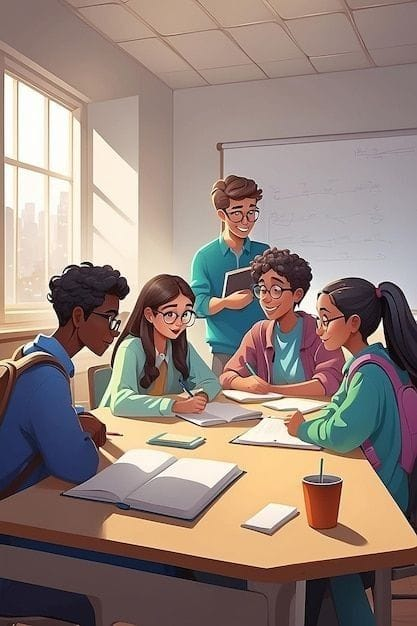

The Shenandoah Heritage Homeschool Collective emerged from a profound passion for education and a deep appreciation for the vibrant cultural tapestry of Black and Brown Americans. It was founded in response to a crucial realization: as African Americans, we are navigating an era of identity crisis, where the struggle to understand, embrace, and preserve our identity is more pressing than ever. Our initiative is a call to action—a commitment to rediscovering and celebrating who we are. It is about empowering our community to confidently own our identity and enter every room with the assurance that we belong and have rightfully earned our place. Through education and cultural enrichment, we strive to instill in our students the confidence and conviction to navigate the world with pride and resilience.
Our Services

Cultural Workshops
Workshops exploring African American history, art, and music. Includes storytelling sessions, art projects inspired by African American artists, and music classes featuring influential genres like jazz and blues.
Heritage Celebrations
Events celebrating cultural holidays and milestones such as Black History Month, Juneteenth, and Kwanzaa. Includes performances, guest speakers, and community gatherings.

Curriculum Integration
Curriculum includes African American literature, historical figures, and contributions across subjects. Integrates cultural focus into history, literature, and social studies.